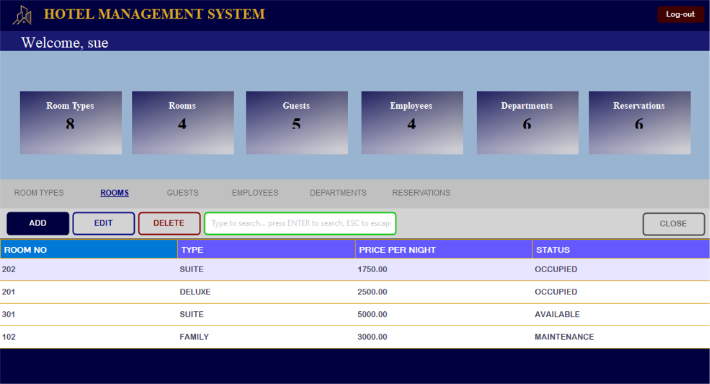

01

oop - system
"Built to make everyday tasks simpler."
My very first system project that i developed last semester under the instruction of Sir Sherwin Caacbay. This focused on organizing data and automating everyday processes from start to finish.